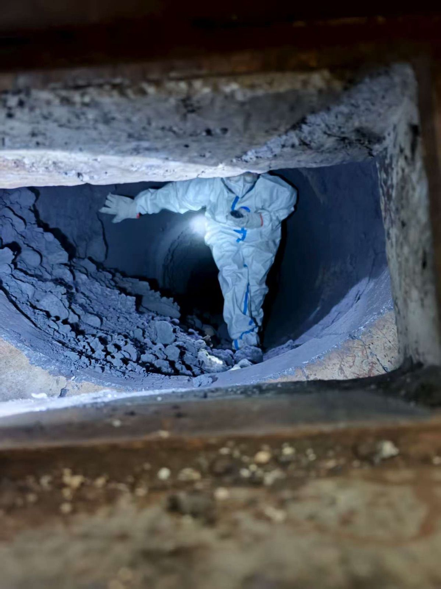

Sunland Environmental Technology · Changzhou, China · Summers 2022 to 2025
Four summers in a metal recovery plant
Sunland is a mid-size urban mining manufacturer. It recovers valuable metals such as nickel, copper, and chromium oxide from industrial waste. Its refined metals go to EV battery and steel manufacturers. Its own solar stations power the plant. I held a different role each summer.
15person team supervised
+25%line efficiency
0.4% → 67%nickel recovery
0.8 MWPV station evaluated




Production management · Assistant to the General Manager
- Supervised a 15-person team and applied the 5M1E framework to daily operations. Efficiency rose 25%.
- Contributed to pyrometallurgical recovery of heavy metals in a rotary kiln and electric furnaces.
- Ran 500 L/hr acid purification and recovery with resin absorption on my own.
Applied R&D · Apprentice Engineer
- Developed a wind evaporation system that reuses compressor waste heat through air source heat pumps. It reaches zero liquid discharge. A patent is planned.
- Led acid-soluble recovery experiments. Recovery rose for Cu (1% to 8%), Ni (0.4% to 67%), and Mo (6% to 14%). I then oversaw the nickel recovery line.
- Assisted the analysis of heavy-metal waste vitrification with the State Key Laboratory of Advanced Metallurgy at Beijing University of Science and Technology.
Business operations · Engineering Intern
- Coordinated logistics, lab, HR, and finance teams to align production with company goals.
- Evaluated a 0.8 MW PV station to balance energy use and cut costs.
Compliance and supply chain · EHS Intern
- Identified and mitigated manufacturing safety risks.
- Supervised prestressed concrete and parapet construction for standards compliance.